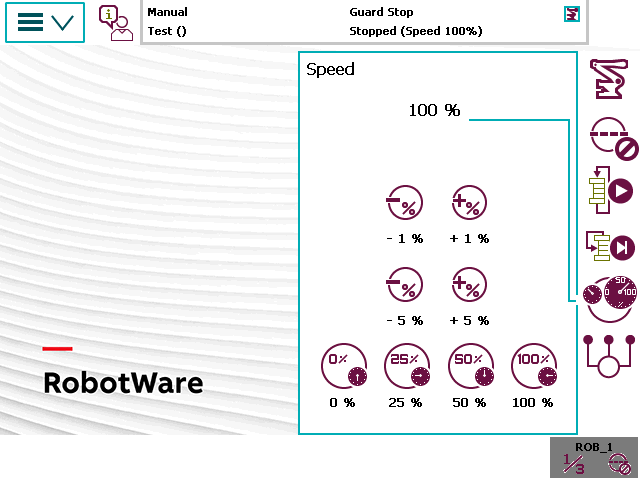

速度设置适用于当前操作模式。但是，如果降低自动模式下的速度，那么，更改模式后该设置也适用于手动模式。
点击 Speed（速度）按钮可查看或更改速度设置。在这些按钮上以“相对于最大运行速度的形式显示当前运行速度。

-1%
以 1% 的步幅减小运行速度
+1%
以 1% 的步幅增加运行速度
-5%
以 5% 的步幅减小运行速度
+5%
以 5% 的步幅增加运行速度
0%
将速度设置为 0%
25%
以四分之一 (25%) 速度运行
50%
以半速 (50%) 运行
100%
以全速 (100%) 运行